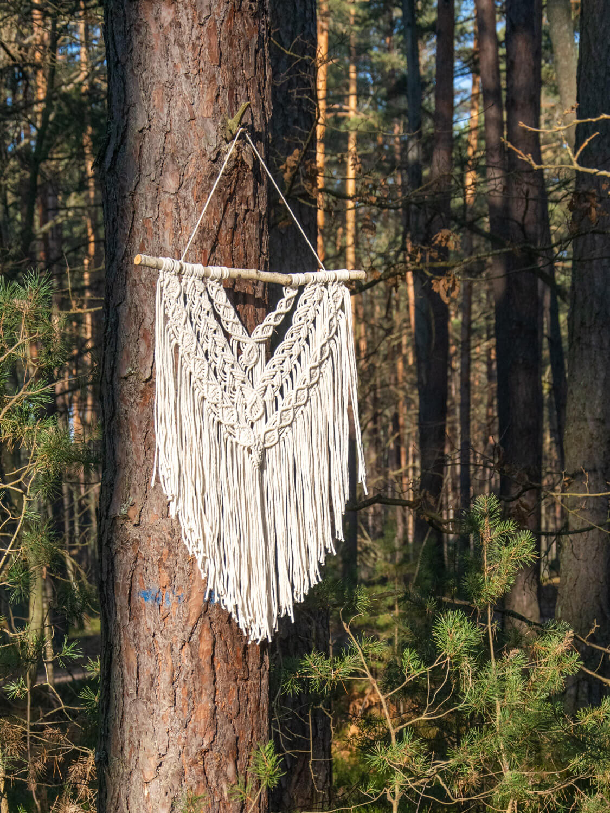
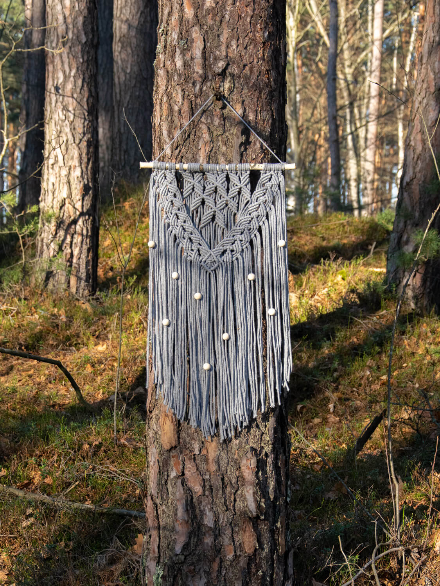
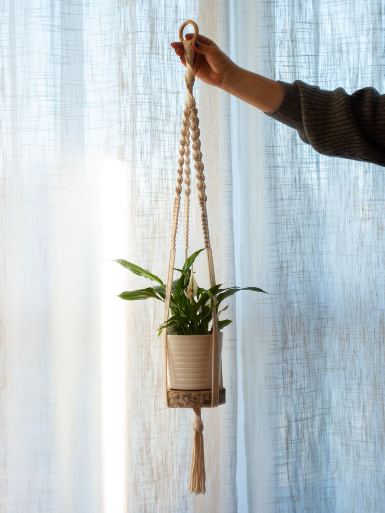
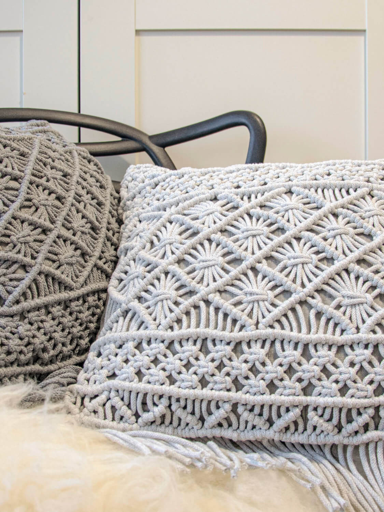
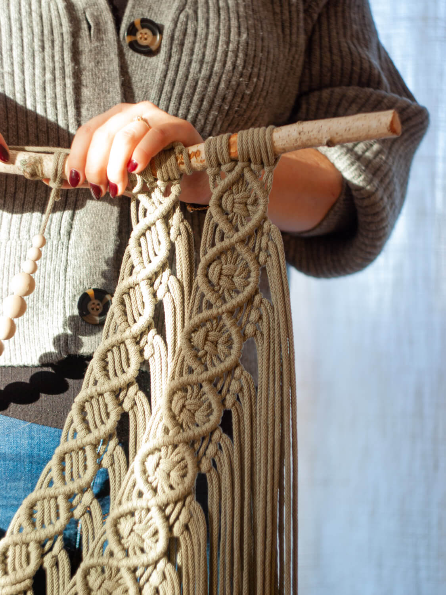
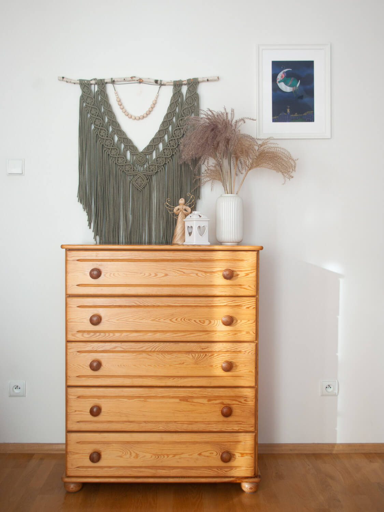
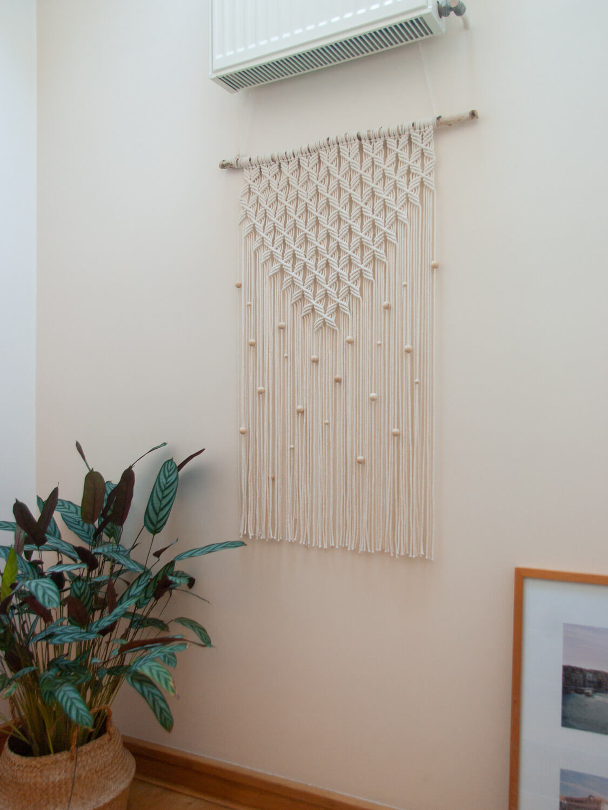

Wszystkie nasze makramy wykonywane są wyłącznie z naturalnych produktów. Staramy się wspierać polskich producentów, dlatego wszystkie pólprodukty pochodzą właśnie od lokalnych dostawców, którzy zapewniają nam najwyższą możliwą jakość.
w sznurkach
o mnie
Mam na imię Kinga i odkąd pamiętam, dekorowanie wnętrza własnoręcznie wykonanymi przedmiotami było mi bliskie. Jako architekt krajobrazu i florysta, wrażliwość na otaczające mnie piękno nie jest mi obce. Teraz przyszedł czas na kolejną pasję jaką jest wyplatanie ze sznurków. W sznurkach to strona, na której znajdziesz radość i pasję z tworzenia rękodzieła. Bardzo cieszę się, że tutaj trafiłeś. Obejrzyj moje prace i razem ze mną zakochaj się w sznurkach!
makramy
Kije do makram są własnoręcznie przez nas pozyskiwane i z największą dokładnością przygotowywane. Dzięki temu każda praca jest w pewnym sensie inna i stanowi unikatową dekorację wnętrza.
Wszystkie sploty wyplatane są ręcznie z jak największą precyzją i dbałością o detale. Wkładamy w to całe serce, aby jak najlepiej prezentowały w Waszych wnętrzach.
nasze prace
      
kontakt
Jeśli chcesz zamówić makramę odezwij się do nas. Każda makrama wykonana jest z naturalnych materiałów, w 100% ręcznie, z dbałością o każdy szczegół. Kolor i rozmiar makramy oraz innych dodatki można dopasować do swoich potrzeb.
Napisz do nas - kontakt@w-sznurkach.pl!